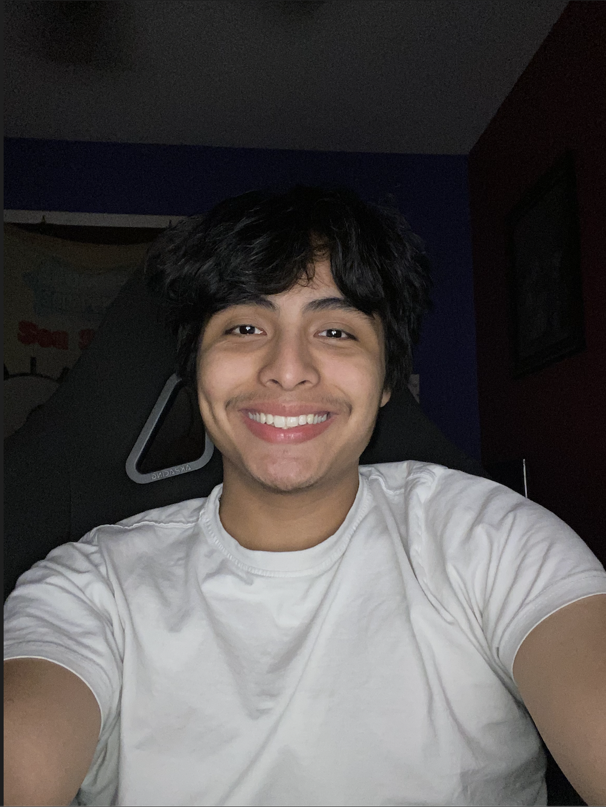
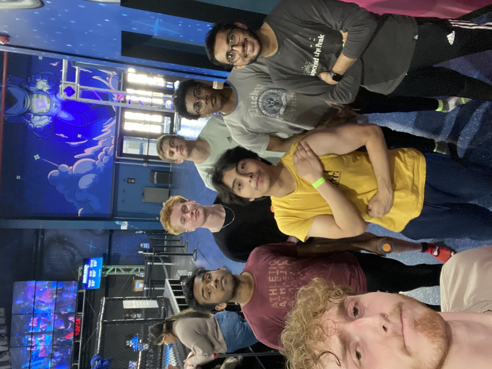
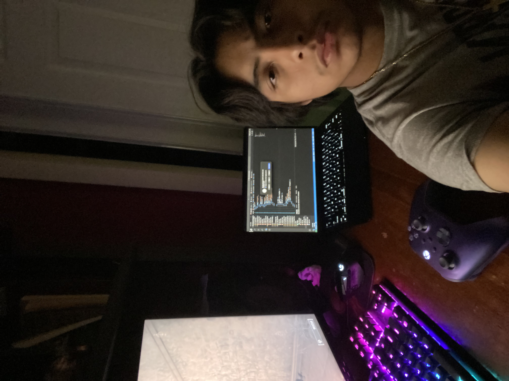

I am an aspiring software engineer, passionately pursuing a degree in computer science at Purdue Northwest. My love for technology drives me to delve deep into coding, web development, and software engineering concepts, constantly striving to enhance my skills. Beyond academics, I immerse myself in gaming, where I find inspiration and develop strategic thinking. Keeping a balanced lifestyle, I prioritize regular workouts to stay fit and spend quality time with friends, which keeps me grounded and motivated. With a commitment to continuous growth and a holistic approach to life, I am excited to make a significant impact in the field of software engineering, bringing innovative solutions to the tech world.

Daniel B.
About me


